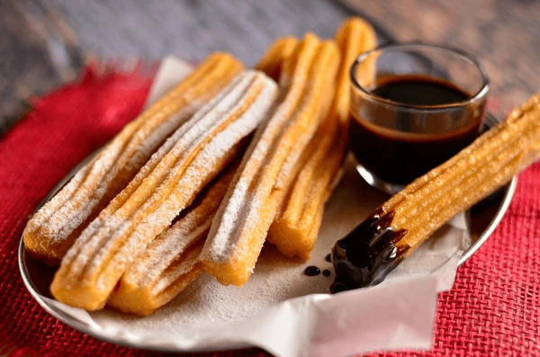

Churros

A Recipe to create some tasty Mexican-Styled Churros
Follow a few easy steps and create some of the sweetest and softed Mexican snacks known to man Churros!
You'll need the following ingredients:
- 1 cup water
- 2.5 tablespoons white sugar
- 0.5 teaspoon salt
- 2 tablespoons vegetable oil
- 1 cup all purpose flour
- 2 quarts oil for frying
- 0.5 cup white suagr
- 1 teaspoon ground cinnamon
Once you have all of your ingredients, follow the steps below:
- Gather all ingredients
- Combine water, 2 ½ tablespoons sugar, salt, and 2 tablespoons vegetable oil in a small saucepan and place over medium heat. Bring to a boil and remove from the heat
- Stir in flour, stirring until mixture forms a ball
- Heat oil for frying in a deep fryer or deep pot to 375 degrees F (190 degrees C). Transfer dough to a sturdy pastry bag fitted with a medium star tip
- Carefully pipe a few 5- to 6-inch strips of dough into the hot oil; work in batches so you don't crowd the fryer
- Cook until golden; use a spider or slotted spoon to transfer churros to paper towels to drain
- Combine 1/2 cup sugar and cinnamon. Roll drained churros in cinnamon and sugar mixture
AND ENJOY!